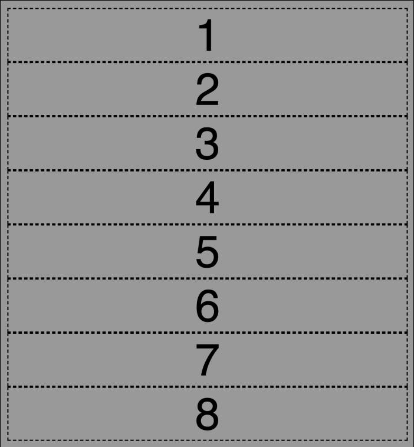
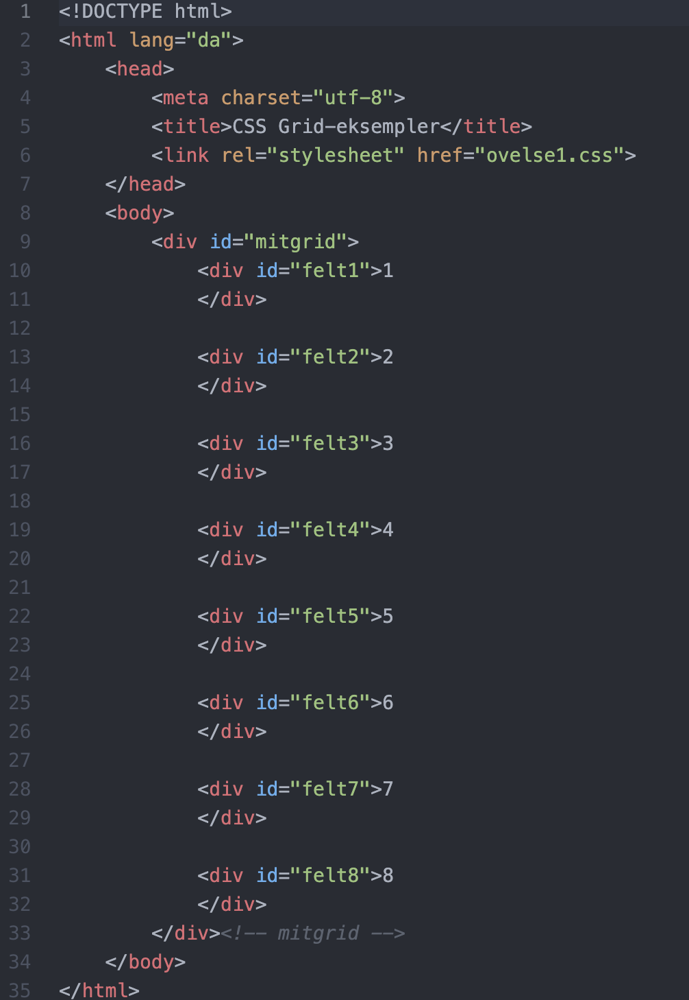
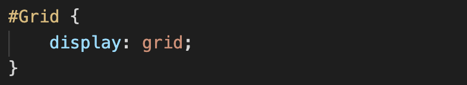

CSS gridsystem er den nyeste specifikation i CSS, og omtales som det mest revolutionerende siden responsivt webdesign. Grid model bygger delvist på flexbox og er nu understøttet i alle browsere. Grids gør det meget nemmer at placere elementer i CSS og gør mulighederne for design mange. Med grids kan du nemt sætte dine op i elementer rækker og koloner og indenfor de felter kan du nemt rykker rundt på felterne.
For at kunne oprette et grid skal man i sin html sørge for at dele sine elementer ind i forkellige sektioner, ved at give dem et id eller en class. Når de forskellige felter har fået et id, skal man i sin css definere de forskellige elementer og give dem et navn.
I undervisningen har vi arbejdet med at lave CSS grids. Her ses et simpelt layout, med 8 felter der hver er blevet givet et id.
Efter man har inddelt sin HTML i de forskellige sektioner man ønsker at sætte i grid, skal man i sin CSS ind og definere de forskellige id'er ved at gøre dem til container-elementer. Dette har ikke endnu nogen påvirkning på layoutet, men er et vigtigt trin i at opsætte sit grid.
Efter vi har defineret de forskellige elementer kan vi sætte vores grid op.